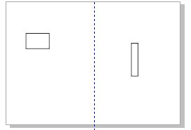
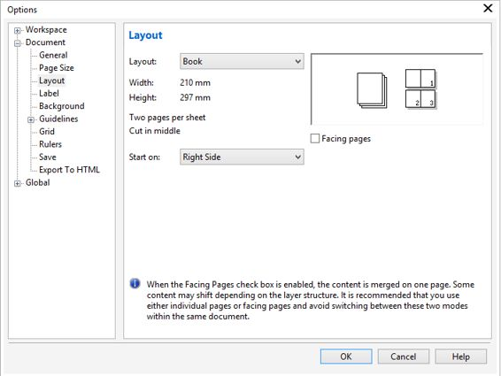
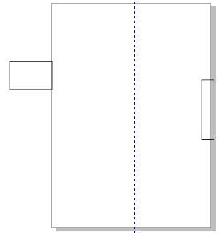

Помогите с каталогом
vova2110 / 20.02.2015, 22:15
Форум:
Версия программы:
16.0.0.707
Доброго времени суток, помогите разобраться, и найти более правильный и менее затратный способ решения проблемы: Делал макет каталога на 40 стр. заказчику: размер 409x235 (альбомная ориент.). Начал макет создавать сразу готовым вариантом, (не по странично) , а так целиком листами, потому как заказчик не знал типографии (требований) когда уже всё было готово, нашлась типография,.Теперь она требует что бы я разбил макет по странично! Вопрос я этого не когда не делал, как сделать это проще, что бы не переделывать весь макет.
p/s не специалист corel , но кроме меня никто не сделает его, поэтому вся ответственность на мне(
помогите пожалуйста добрым советом, спасибо.
Я бы начал с самого макета. Не понятно, как должен быть разбит документ. Поэтому "наугад" посоветую изменить макет страницы в меню Layout (Макет). Как только поменяете макет на нужный, увидите, как выглядит документ. А он будет выглядеть совсем не так, как при создании целыми листами. Придется подгонять изображения потом на каждом листе.
Например, на рис. 1, я на формате А3 (альбомная ориентация) нарисовал 2 прямоугольника.

Выглядит нормально и проблем вроди нет. Но мне надо получить на выходе что-то типа книги. Поменяю макет (рис. 2)

И документ станет выглядеть, как на рис. 3.

Проблема налицо. Мои прямоугольники вылезли за пределы печатной страницы. Корел сам разбил листы так, чтобы при печати получилось то, что нам нужно. Но это мое предположение. Из поста неясно, почему типография потребовала именно постраничную разбивку, хотя примерно догадаться можно. Если заказчик не может вразумительно рассказать, чего там типография хочет, свяжитесь с типографией сами и выясните все требования (нюансы), которые требует типография.
Мало информации по каталогу.
Если ли припуски под обрез?
Есть ли возможность разделить страницы с разворота?
Наверняка на развороте со стр. 2 расположена стр. 39.
Узнай, принимают ли в этой типографии pdf.
Обычно, для разделения разворотов на отдельные страницы я поступаю так:
1. конвертирую готовый каталог в pdf
2. создаю в Adobe InDesign (или QuarkXPress) новый документ и импортирую туда развороты в pdf
3. Публикую из InDesign (или из QuarkXPress) новый pdf постранично с полями под обрез и тд
4. если нужно то в acrobatPRO меняю порядок страниц.
PS каталоги такого объема лучше делать в InDesign или QuarkXPress
#3 / titrex , а вот это уже интересно: лучше делать в InDesign или QuarkXPress.
Чем именно лучше?
Ребят всем, большое спасибо за советы, правда. Буду принимать и учитывать,
вот как выглядит каталог, его нужно разбить для типографии по странично.
Буду сейчас пробовать вариант titrex(а) не разу этого не делал, но думаю всё получится.
Вопрос чайника, ребят припуск под обрез если делать по страничный (полосный вариант) делать (левая полоса внизу слева и вверху) и внизу справа и вверху если это правая полоса, как то так) верно?
1 очень плохо, что текст попадает на сгиб (точнее ужасно), на факт что страницы при сборке совпадут с такой точностью (есть допустимые нормы)
2 в макетах большого размера не стоит придерживаться правила "3 мм до обрезного формата", нужно делать больше (дать "воздуху"), тогда макет не будет смотреться "зарезанным" и ограниченным....
Solowejka, ни для кого не секрет, что в CorelDraw не очень хороший словарь переносов, и форматирование текста "жуётся" им не очень оперативно (с подтормаживаниями, особенно если есть обтекание текста и изменение междустрочного расстояния), а при увеличении количества страниц , всё это только усугубляется....
ps напиши в личку, организую демонстрацию )))
Я скинул пример страницы, как выглядит у меня, конечно я не совсем "глупый" в этих моментах, понимаю что мне нужно будет двигать элементы, в зависимости от расположения "разворотов" (полос) и сгиба, припуск под обрез буду делать 5 мм,
я прошу узнать более простой и правильный вариант решения моей проблемы... сегодня поставлю inDisign буду пробовать и осваивать его.
Можно ли там будет резать целый разворот на полосы "страницы" а потом их через acrobatPRO упорядочить так как нужно, ? спасибо за ответ.
Готовый каталог будет сшиваться на скрепку и будет А3 (ландшафтный)?
Да верно, он будет сшиваться скрепками, формат резанный А3 409x235мм (разворот) 204,5мм х 235мм (размер полосы) альбомная ориентация,
Страницы